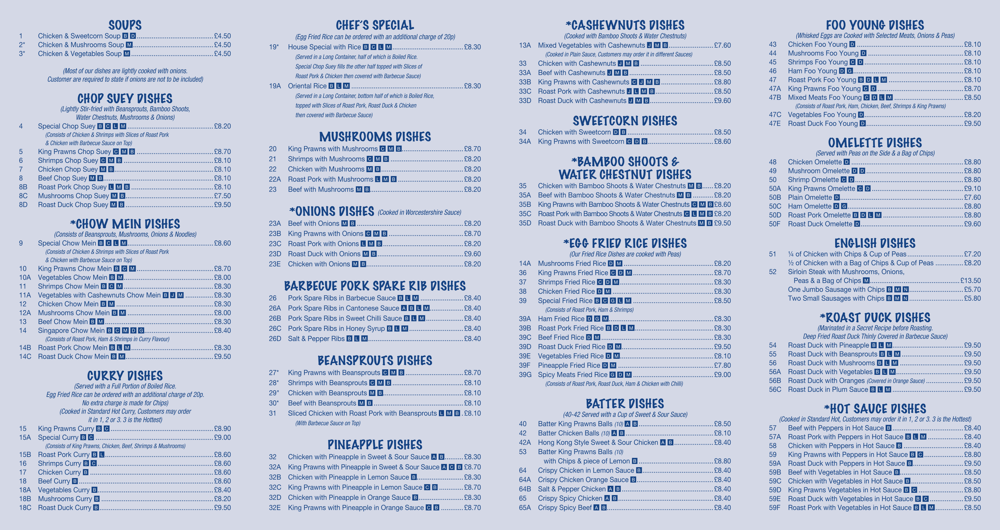
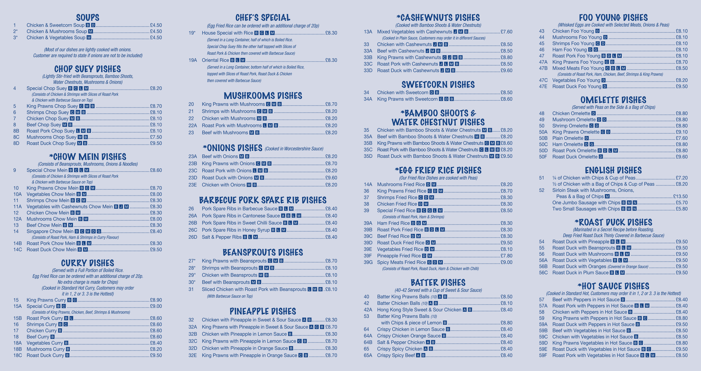

Our Menu
 

Contact Us - Chinese Takeaway in Newton Abbot
15 High Street, Bovey Tracey, Newton Abbot, TQ13 9AB
01626 123456
Mon-Sun: 5:00 PM - 10:00 PM
Your Favorite Chinese Takeaway in Newton Abbot
15 High Street, Bovey Tracey, Newton Abbot, TQ13 9AB
01626 123456
Mon-Sun: 5:00 PM - 10:00 PM